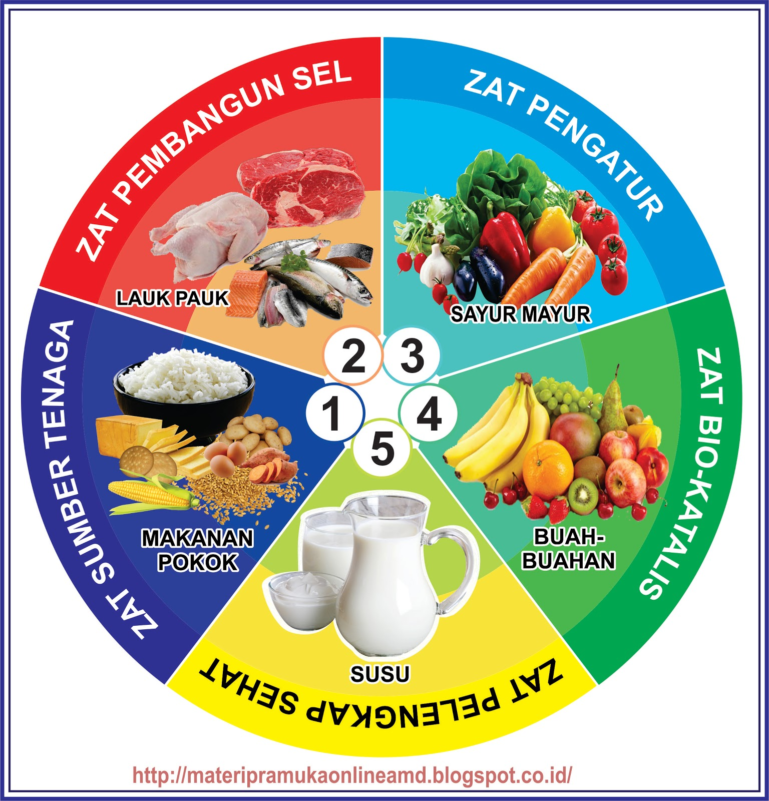

Kunci Penyajian Makanan yang Membantu Atasi Picky Eater
Panduan Lengkap Penyajian Makanan Anak
-
Kesesuaian Porsi:
Ketelitian sangat diperlukan dalam menyajikan atau menyiapkan porsi hidangan makanan. Berikan makanan dalam porsi kecil tetapi lebih sering untuk menghindari rasa terpaksa dan tetap menjaga asupan nutrisi anak.
-
Variasi Menu:
Menu makanan yang diberikan pada anak sebaiknya mencakup komponen gizi seimbang 4 sehat 5 sempurna:

Piring makan sehat 4 sehat 5 sempurna
Menu anak lengkap: nasi, lauk, sayur, buah
- Makanan (sumber karbohidrat): nasi, jagung, umbi-umbian, roti/gandum
- Lauk pauk (sumber protein): ayam, ikan, telur, tempe, tahu, daging
- Buah-buahan (vitamin dan mineral)
- Susu (kalsium dan nutrisi)
-
Cita Rasa:
- Gunakan bumbu alami seperti bawang putih, bawang merah, daun salam, jahe, laos, atau keju.
- Hindari makanan dengan rasa terlalu kuat seperti pedas atau terlalu asam.
- Kreasikan sayuran yang tidak disukai anak, misalnya dengan merebus lebih lama atau mencampurnya dengan keju/susu untuk mengurangi rasa pahit.
-
Penampilan:
- Kebersihan: Cuci tangan sebelum menyiapkan atau menyajikan makanan, serta pastikan alat makan bersih.
- Kerapian: Jaga agar makanan tidak tumpah dan tersusun dengan baik. Anak cenderung lebih tertarik pada makanan yang rapi dan cantik.
- Menarik: Kombinasikan warna dan bentuk makanan. Misalnya, bentuk nasi seperti karakter favorit anak atau buat kreasi bento sederhana.
-
Libatkan Anak dalam Memasak:
Ajak anak untuk ikut serta dalam proses memasak agar mereka lebih mengenal bahan makanan, seperti sayur dan buah. Anak bisa membantu mengaduk, mencicipi rasa, atau menghias makanan. Ini juga menjadi stimulasi motorik dan kognitif sekaligus meningkatkan rasa ingin mencoba hasil masakannya sendiri.